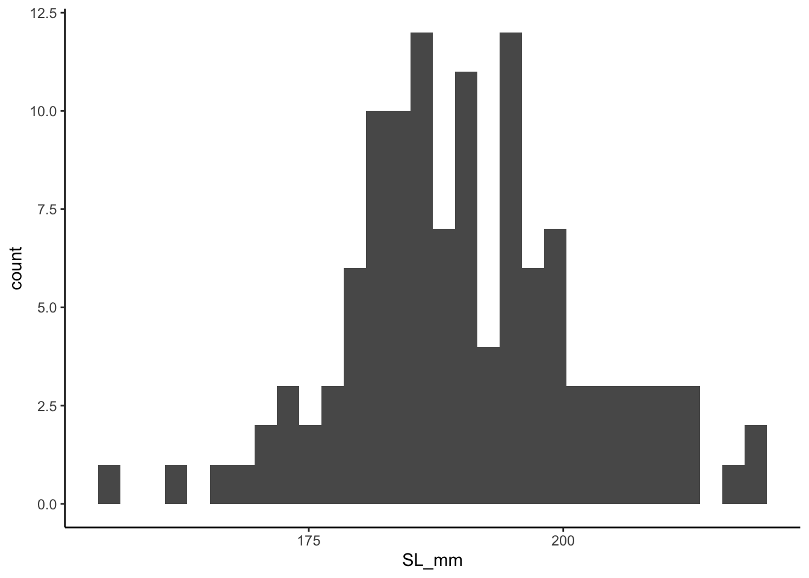
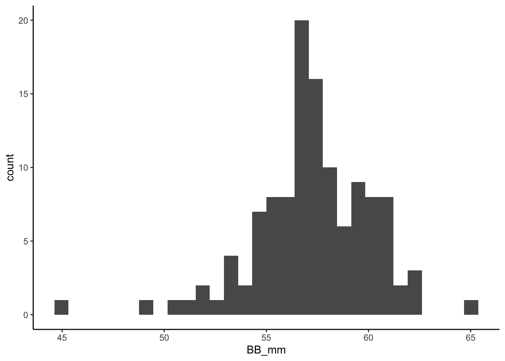
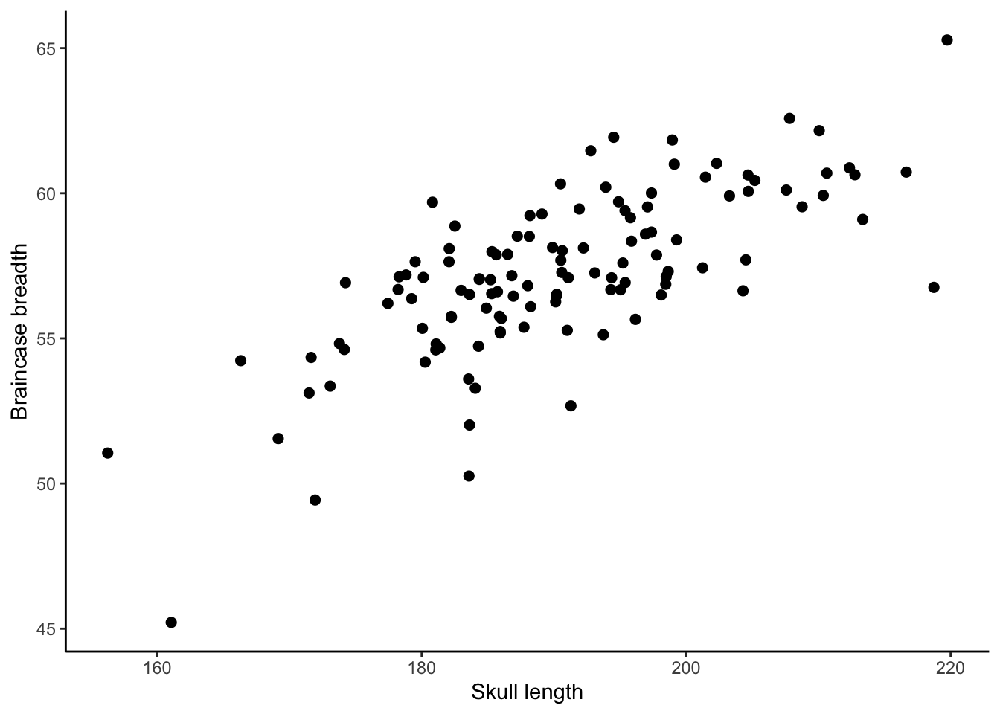

3 Making graphs
Before we can make the graphs we will need to install and load the necessary packages.
- First, we would have to install the package
ggplot2. To do this, we will run the following code
install.packages("ggplot2")- Now we load the installed package into
Rby running the code
library(ggplot2)- Now that the required package has been installed and loaded, we are going to create the frequency distribution of each variable. The distribution for SL_mm is produced by running the following code:
ggplot(coyote, aes(x=SL_mm)) +
geom_histogram() +
theme_classic()## `stat_bin()` using `bins = 30`. Pick better value with `binwidth`.
- We can also create the frequency distribution for BB_mm by running the following code:
ggplot(coyote, aes(x=BB_mm)) +
geom_histogram() +
theme_classic()## `stat_bin()` using `bins = 30`. Pick better value with `binwidth`.## Warning: Removed 1 rows containing non-finite values (stat_bin).
These lines of code are very important to the analysis so you would want to add them as the next lines of code in your R Script. At this stage your R script will look like this:

- Now we create a scatter plot of the two variables (SL_mm and BB_mm) using the following code.
ggplot(coyote, aes(x = SL_mm, y = BB_mm)) +
geom_point(size = 2) +
theme_classic() +
xlab("Skull length") +
ylab("Braincase breadth")## Warning: Removed 1 rows containing missing values (geom_point).
On this scatter plot, we show the relationship between the SL_mm and BB_mm by treating BB_mm as a function of SL_mm.
- If you have outliers in your data and you wish to remove them you can do so using the following code. Replace
spec no. of the outlier of your datain the code with the actual spec number of your data.
coyote <- coyote %>% filter(Spec_no != "spec no. of the outlier of your data")